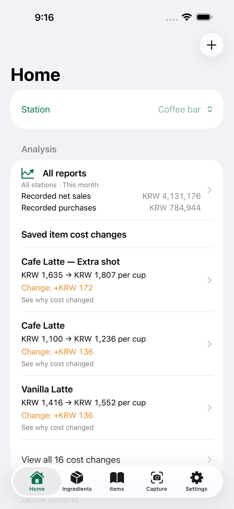

Start with what you buy
A bag of beans, a carton of milk, cups and lids. Record the pack size and purchase price.
For cafés, bars & restaurants · iPhone
Enter what you pay for a pack and how much your recipe uses. See the cost of each drink or dish—and what changed when ingredient prices rise.
Free manual costing & reports · Optional Capture subscription · English / 한국어

A bag of beans, a carton of milk, cups and lids. Record the pack size and purchase price.
Use your recipe amounts to calculate each serving. Include preparations and packaging when needed.
Compare saved costs to see which ingredients changed, then review your selling price.
Costs include the ingredients and packaging you enter. Labor, rent and other overhead are separate. Ingredient cost percentages are not net profit margins.
A modeled latte example
In this modeled example, a latte costs $1.20. Raising only the milk price from $3.00 to $3.60 per liter makes it $1.32. Understand the 12¢ change before deciding what to charge.
Work through a latte example →Illustrative USD purchase prices and recipe; not a currency conversion. Other app examples may use different figures.
$1.20$1.32
+$0.12 from the milk price changeIn the app, open Home → Explore example menus for costed coffee, bar and restaurant examples. Set up my menu is a separate starting point for your own purchase prices.
Short walkthroughs in English · All financial figures are modeled example data.
Loading an example saves a complete local backup before replacing the current kitchen. You can restore your own records from that backup.
Start free
Enter ingredients and recipes, investigate cost changes, review recorded sales and purchases, log measured waste, plan production and export complete backups without a subscription.
Kitchen Margin Capture is an optional monthly auto-renewing subscription for new invoice, sales report and recipe scans. English and Korean text recognition runs on your device. Review readings against the source. The app and Apple purchase screen show the current localized price and any eligible trial before payment.
Subscription help →Start without an app account. Kitchen Margin does not upload kitchen records to a developer server. There is no POS integration or cloud sync; export a complete backup to keep a copy elsewhere.
Read the privacy policy →